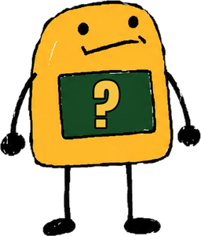

İşin Garibi
Tarihte yaşanmış (ya da yaşandığı iddia edilen) en saçma olaylar. Çizimler kaba, kaynaklar açık.
- GERÇEK
- ŞÜPHELİ
- EFSANE
Her iddiaya bunlardan biri basılır. Kaynaklar videonun açıklamasında.
YouTube kanalıİlk video 3 Ekim, 17:00Her Cumartesi yeni videoŞÜPHELİ
Zemin: Braun ve Hogenberg, Strazburg gravürü (kamu malı).